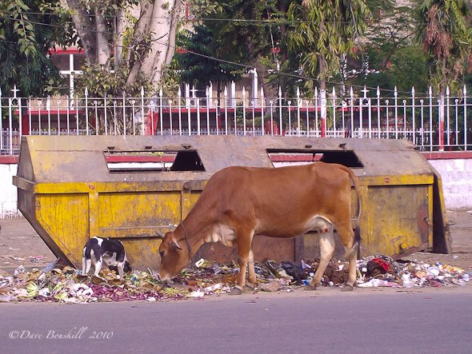

"Sid and the loner made posters explaining the unknown element that is still unidentified but is mixed with garbage and how cows and other animals feed on it. Spread of the radioactive distribution still prevails. There were definite signs of the animals declining, they started disappearing. People didn't want to think further about the cruelty the animals faced. More than that, they feared for their health. If animals could get affected so could they. People have started questioning their outlook and ignorance."
